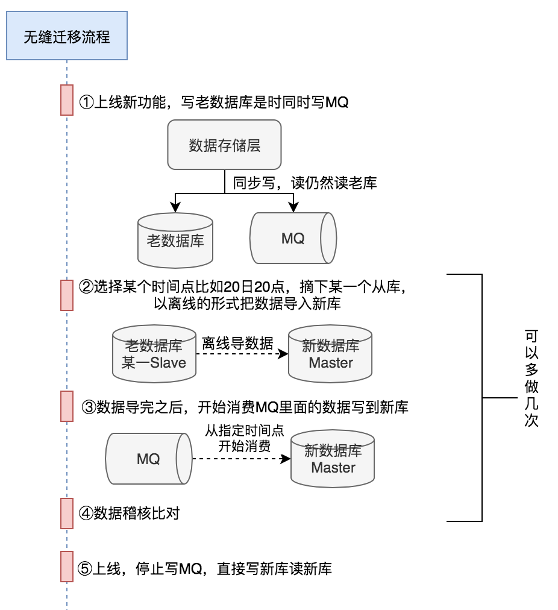

数据库数据无缝迁移
区分数据类型，不同数据类型区分对待。
时效性数据：比如时效性1个月，从某个时间开点开始同步双写，读还是读老库，一个月之后就可以直接读新库，老库也不用再写了。
永久性数据：
1、上线新功能，让数据库写老库的同时同步写MQ
2、在某个时间点，比如20日20点，把老库的从库从集群里面摘下，然后把数据导入到新库
3、导入完成后，开始消费20日20点之后的消息，然后写新库
4、新老库数据一致性的稽核
5、上线，停掉写老库和写MQ，直接写新库，读新库

RocketMQ如何指定从某个时间点开始消费？
consumer.setConsumeFromWhere(ConsumeFromWhere.CONSUME_FROM_TIMESTAMP);
consumer.setConsumeTimestamp("20200420200000");